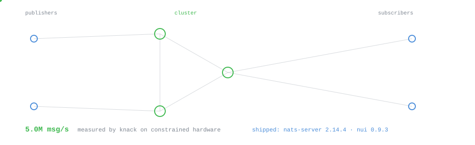
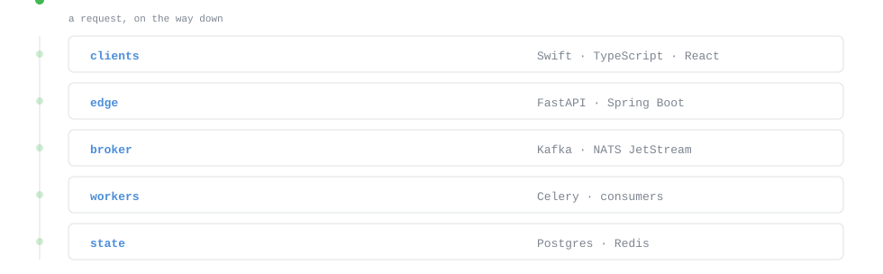
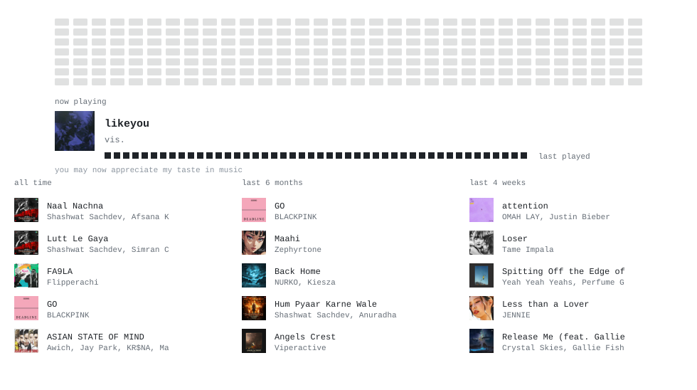

Animations run here exactly as they will on GitHub — same SVG, same SMIL. Toggle the theme to check both: everything except the music panel is drawn on a transparent background, and the music panel is meant to stay black. Hit reload art after regenerating to bust the browser cache.